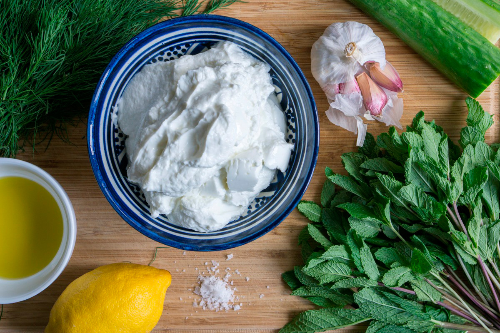

Making Tzatziki
This staple in Turkish and Greek cuisine is used to accompany mezze and warm bread, served as a more liquid sauce alongside grilled meats and salads.
Ingredients
- ½ a large cucumber
- 2 cloves of garlic
- 2 tablespoons quality extra virgin olive oil
- 1 x 500g tub of strained Greek yoghurt
- 1 small bunch of fresh dill
- a few sprigs of fresh mint
- 1 lemon
- 1 teaspoon dried mint
Note: Never ever, ever leave cooking foods unattended – not even for a minute.

- Slice the cucumber in half lengthways and cut or scrape out the seeds – this is where most of the water content is. Grate the remaining cucumber.
- Place the grated cucumber in a sieve, rest it on a bowl and add some sea salt. Give it a stir, and leave to drain for a few hours, or overnight in the fridge. Stir now and again, helping it along by pushing the liquid out with a spoon.
- In the meantime, peel and finely grate or crush the garlic, then combine with the oil in a large bowl. You can allow this to sit for a few hours to mellow out the pungency, but it’s not essential.
- When most of the liquid has drained from the grated cucumber, spread it out over a tea towel and pat dry. Combine with the garlic mixture, then stir through the yoghurt until evenly distributed.
- Finely chop the dill and mint leaves, then fold through the yoghurt mixture along with a squeeze of lemon juice and the dried mint (if using). Season with salt to taste.
- Serve with warm pita or Turkish bread and crudités, or alongside salad and grilled meats.